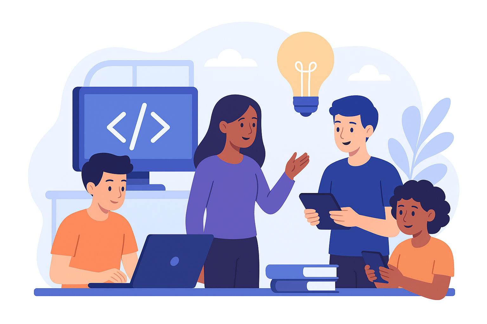
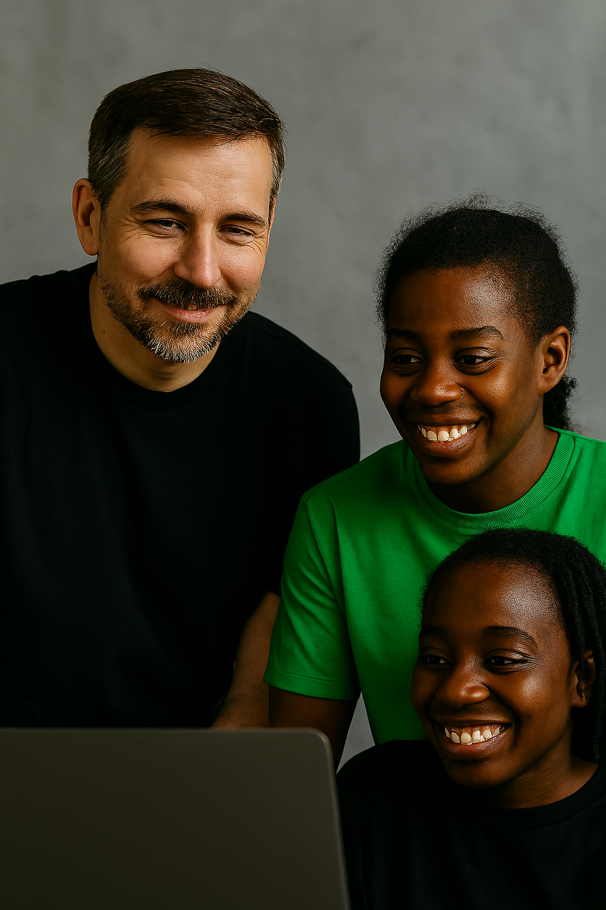
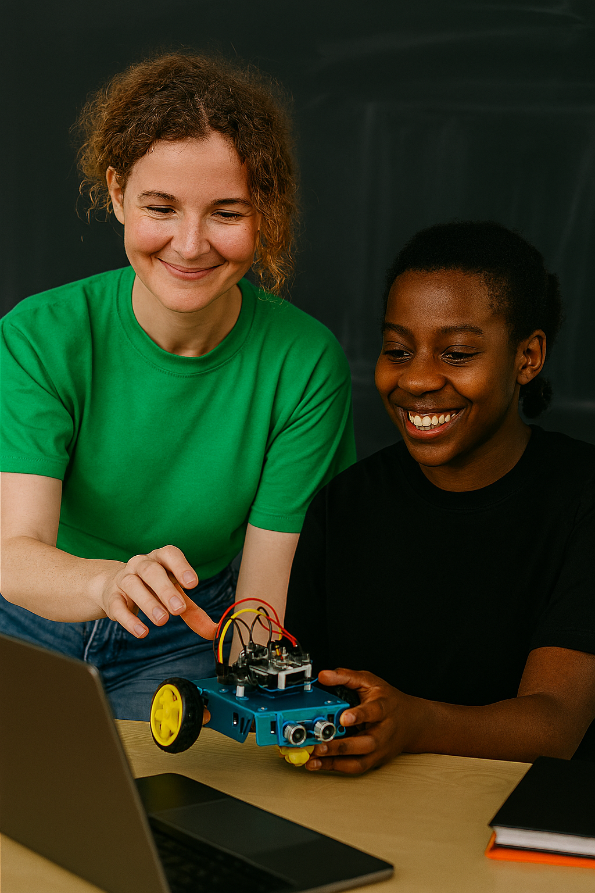
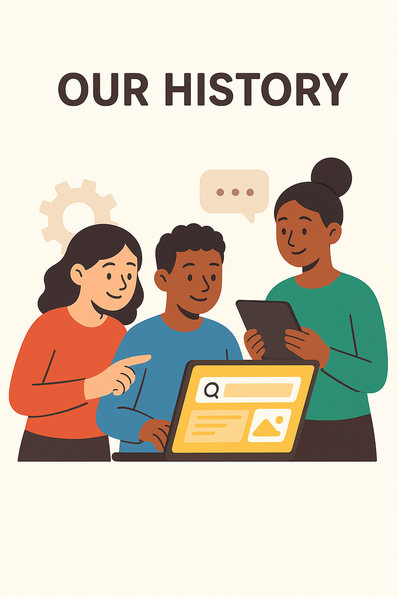

Quem Somos?

A BitEdu é uma ONG criada por estudantes apaixonados por tecnologia e impacto social. Nosso propósito é conectar sonhos e oportunidades, tornando o acesso à educação digital mais justo e acessível.
Missão
Transformar curiosidade em conhecimento e conhecimento em futuro, usando a tecnologia como meio de inclusão e crescimento.
Visão
Ser referência em educação tecnológica acessível, formando pessoas preparadas para o mercado digital e para transformar suas comunidades.
O que fazemos?
Oferecemos cursos, mentorias e oficinas gratuitas de programação, robótica e pensamento digital, voltados a comunidades de baixa renda.
Nossa história
A BitEdu nasceu em 2020, quando um grupo de estudantes decidiu usar a tecnologia para gerar impacto social. Durante a pandemia, perceberam a falta de acesso à educação digital e criaram cursos gratuitos para mudar essa realidade. O projeto cresceu rapidamente e, com o apoio de voluntários e parceiros, passou a atuar em várias comunidades, oferecendo cursos, mentorias e oficinas que conectam jovens ao mundo da tecnologia. Hoje, seguimos com o propósito de transformar curiosidade em conhecimento e conhecimento em futuro, acreditando no poder da educação para mudar vidas.